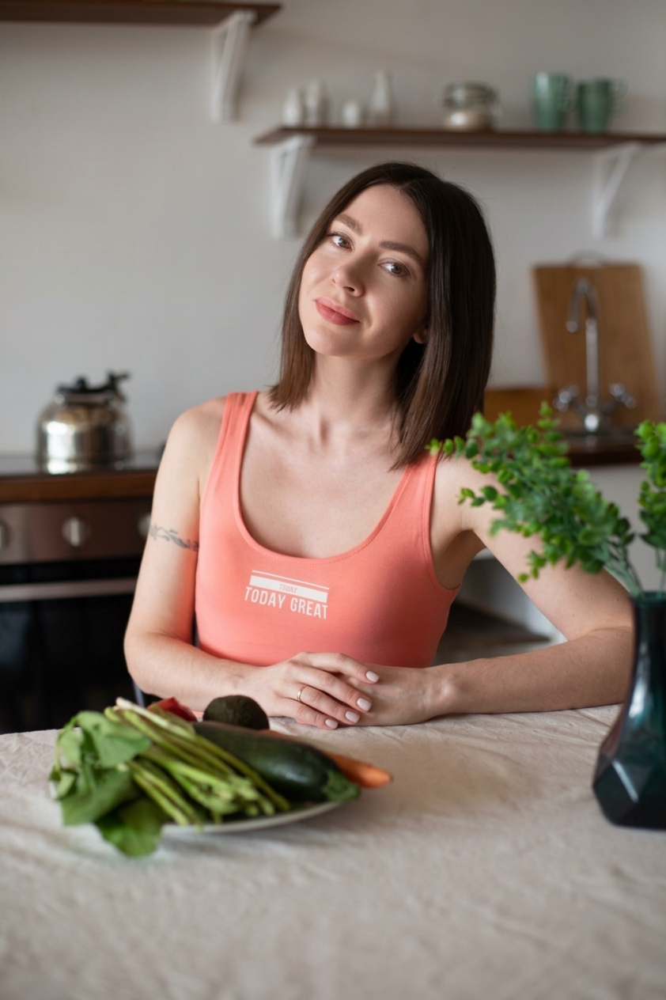

Пищеварение восстанавливается. Без таблеток, жёстких диет и списков «нельзя». Натуральные сборы + индивидуальное питание + поддержка каждый день.

Их можно убрать. Без таблеток на постоянку.
Омепразол «на постоянку» — а изжога всё равно возвращается.
К вечеру живот как барабан. Привыкли — но это не норма.
Мешки под глазами, сонливость после еды. Анализы «в норме».
Диеты, спорт — цифра стоит. Дело не в калориях, а в усвоении.
Слабительные, ферменты, антациды. Тело отвыкло работать само.
Молочное, хлеб, фрукты… Скоро останется только гречка.
Проблема не в вашей силе воли — а в подходе
Убирают симптом, не причину. Пока пьёте — работают. Перестали — всё возвращается.
Написаны для абстрактного человека. А ваш тип конституции и состояние пищеварения — уникальны.
Гастроэнтеролог лечит желудок. Диетолог — калории. Никто не смотрит на пищеварение как на систему.
Пока лечите симптомы по отдельности — система продолжает сбоить. Нужен другой подход.
В восточной медицине пищеварение — «корень здоровья». Когда оно работает — уходят отёки, нормализуется вес, возвращается энергия. Сами.
Созвон 30–40 мин. Определяю тип несварения, составляю план.
Травяные сборы лично для вас. Питание из обычных продуктов — по простым правилам.
На связи каждый день. Корректирую программу по ходу.
Большинство участников отмечают результат уже в первый месяц.
«Я не верила, что это возможно без таблеток. А оказалось — нужно было просто по-другому есть»
Наталья, 49 лет. История из практики, с её слов.Всё, что нужно, чтобы наладить пищеварение — от диагностики до результата
Созвон 30–40 мин. Определяю тип конституции, состояние пищеварительного огня, анализирую анализы и жалобы.
Травяные сборы восточной медицины, подобранные лично для вас. Натуральные, без химии. Доставка в любой город.
Не диета с калориями, а система: какие продукты, в каких сочетаниях, при какой температуре, в какое время.
Каждый день на связи в мессенджере. Вопросы, корректировки, поддержка — без ожидания следующей консультации.
Отслеживаем изменения: самочувствие, стул, вес, энергию. Корректирую программу по ходу — не по шаблону.
Факты — так, как рассказали сами
На второй неделе — ежедневный стул без слабительных. Через 2 месяца: минус 8 кг. Я не верила, что это возможно без таблеток.
Через месяц — ем что хочу. Без изжоги, без омепразола. А потом парикмахер спросил: откуда у вас такая густота волос?
Жидкий стул каждый день, боялась выйти из дома. Через месяц на программе — стул нормализовался, лоперамид больше не нужен.
Оба начинаются с бесплатной диагностики. Вы ничем не рискуете.
Самостоятельное прохождение: система питания, рецепты и поддержка в чате
единоразово
Полное сопровождение: диагностика, персональные сборы, питание и ежедневная связь
полный курс · 1–2 месяца
Рассрочка без переплат · Сборы оплачиваются отдельно (~5–7 тыс. ₽/мес.)
Если ваш вопрос не нашли — спросите на диагностике, это бесплатно.
Да. Восточная медицина работает именно с первопричиной — нарушением «огня пищеварения». Гастрит — это симптом, а не диагноз в восточном смысле. Разберём конкретно на диагностике.
Натуральные лекарственные растения, подобранные индивидуально под ваш тип. Не БАДы, не таблетки. Доставляю по России — стоимость отдельно от программы, около 5–7 тыс. ₽ в месяц.
Большинство участников отмечают улучшения на 2–3 неделе. Устойчивый результат — 1–2 месяца. Корректирую программу по ходу, если нужно быстрее.
Индивидуальная программа — это живая работа со мной каждый день: я на связи, отвечаю на вопросы, слежу за динамикой. Не автоматизированный курс.
Не обязательно — начнём с того, что есть. Если анализы уже есть, разберём их. При необходимости подскажу, что стоит сдать дополнительно.
30 минут — и вы поймёте, почему раньше не получалось. Разберу вашу ситуацию и скажу честно: смогу ли помочь.
Число мест ограничено — я работаю с каждым участником лично
Напишите — отвечу лично. Или сразу записывайтесь на бесплатную диагностику, там всё разберём вместе.
Записаться на диагностику →Расскажите коротко о своей ситуации — постараюсь ответить в течение дня.